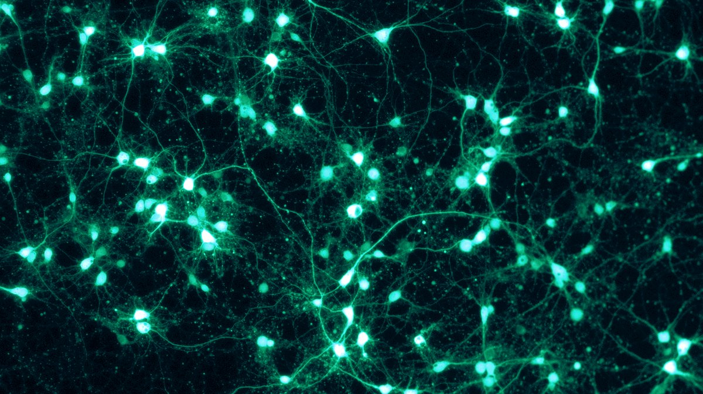
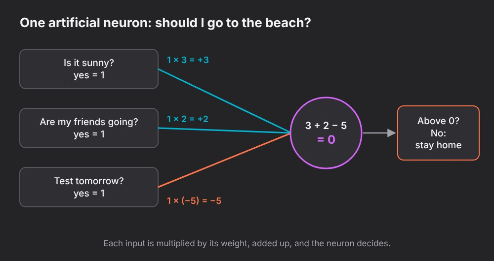

Neural Networks
A Brain Made of Numbers
In 2012 a team at Google, led by Andrew Ng and Jeff Dean, built a huge artificial "brain": 1,000 computers with 16,000 processors and more than a billion connections. They showed it thumbnails from 10 million random YouTube videos for three days, without telling it what to look for. At the end it had learned to recognize something on its own: cats. "We never told it during the training, 'This is a cat'," Dean told the New York Times. It also became strangely interested in "tool-like objects oriented at 30 degrees", like spatulas.
That brain was a neural network, the technology behind almost all the AI we use today.
Copying the Brain
Your brain has about 86 billion neurons. Each one receives signals from other neurons, and if the signals are strong enough, it "fires" and sends a signal on. When you learn something, some connections become stronger and others weaker.
An artificial neural network copies this idea, but with numbers instead of cells. The Nobel committee describes it like this: the neurons become nodes with different values, and the connections between them work like synapses that can be made stronger or weaker.

One Artificial Neuron
A single artificial neuron is very simple. Let's say it has to decide whether you go to the beach today. It gets three inputs: is it sunny, are your friends going, and do you have a test tomorrow. Each input is 1 for yes and 0 for no.
Each input also has a weight, a number that says how much it matters. Sun counts +3, friends +2, the test -5. The neuron multiplies every input by its weight and adds everything up. If the total is above zero, it fires: go to the beach. On a sunny day with your friends but a test tomorrow, you get 3 + 2 - 5 = 0. Not enough. You stay home and study.

That is all a neuron does: multiply, add, decide. On its own it is almost useless. What makes it powerful is connecting thousands or billions of them.
Layers
The neurons are arranged in layers. The first layer gets the raw data, for example the pixels of a photo. The last layer gives the answer, for example "cat" or "dog". In between there are hidden layers that pass the information along and transform it. A network with many hidden layers is called "deep", and that is where the name deep learning comes from.
Each layer learns something a bit more complex than the one before. In 2013 two researchers at New York University, Matthew Zeiler and Rob Fergus, found a way to see what each layer of an image network reacts to. The first layers react to simple edges and corners. The middle ones combine them into textures and patterns. The last ones react to whole parts of objects, like a dog's face or a car wheel. Nobody programmed these steps. The network found them by itself while it learned.
Everything Is in the Weights
Everything a neural network knows is stored in its weights, also called parameters. Google's cat network had about a billion connections. GPT-3, released by OpenAI in 2020, had 175 billion parameters, and today's biggest models are even larger. Every single number is meaningless on its own, but together they can recognize a face or write an essay.
The idea is not new. Researchers worked on neural networks for decades, but for a long time computers were too slow and there was not enough data. In 2024 John Hopfield and Geoffrey Hinton won the Nobel Prize in Physics for work they started in the 1980s, "for foundational discoveries and inventions that enable machine learning with artificial neural networks".
A Black Box
There is a problem. We know exactly what each neuron does, because it is just multiplying and adding. But with billions of weights, nobody can read them and say why the network gave a certain answer. This is why neural networks are often called a "black box", and why a mistake like the husky and snow example from the previous article is so hard to catch.
One question is still open: who chooses all those billions of weights? Not a programmer. They are found automatically during training, by showing the network enormous amounts of data. That is the next article.
Sources
- The New York Times. How Many Computers to Identify a Cat? 16,000 (2012)
- Slate. In Artificial Intelligence Breakthrough, Google Computers Teach Themselves To Spot Cats on YouTube (2012)
- BrainFacts / Society for Neuroscience. How Many Neurons Are in the Brain? (2018)
- The Royal Swedish Academy of Sciences. The Nobel Prize in Physics 2024, press release (2024)
- Zeiler & Fergus. Visualizing and Understanding Convolutional Networks (2013)
- Brown et al. Language Models are Few-Shot Learners (GPT-3) (2020)
Image credits
- Computer Using Cat by EvanLovely (image on screen: Chi King), CC BY 2.0, via Wikimedia Commons
- GFP Neurons by Manuel Schottdorf, CC BY-SA 4.0, via Wikimedia Commons, cropped